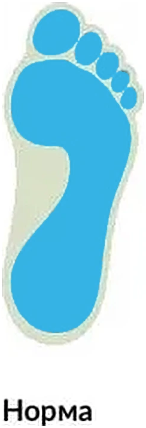
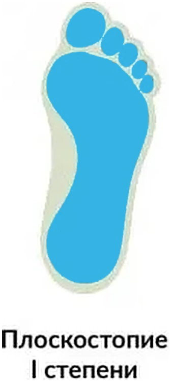
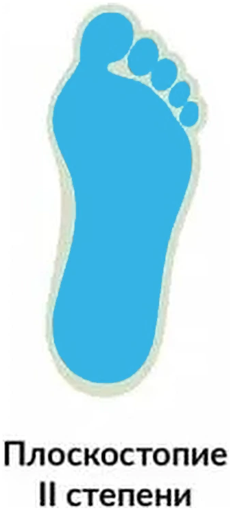
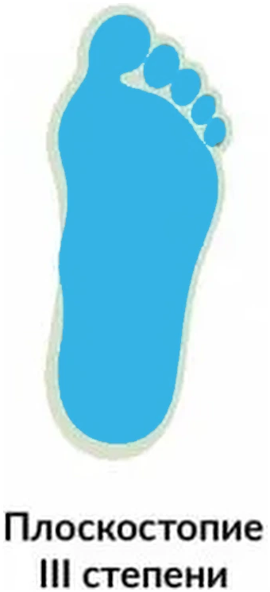

Перед сканированием
- Поставьте стопы на область сканирования.
- Расположите стопы симметрично относительно краёв.
- Стойте неподвижно во время сканирования.
- Нажмите кнопку «Начать сканирование».
- Дождитесь завершения обработки изображения.




На основании следующих источников информации: клинические рекомендации Минздрава РФ «Приобретенные деформации стопы», «Статические деформации стоп» (Е. Р. Михнович, А. И. Волотовский). «Подиатрия» (В. А. Мицкевич)
◌Сканирование выполняется
Захват кадров
0%
Захват завершён — можно сойти со сканера
Сканирование завершено